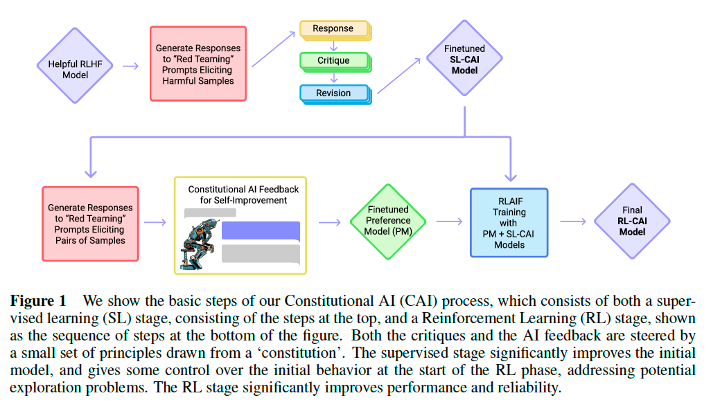
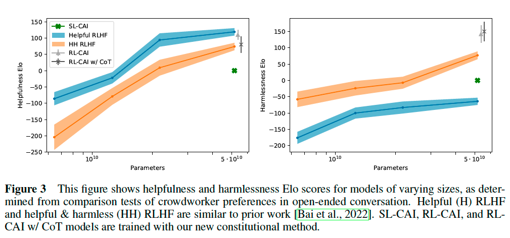
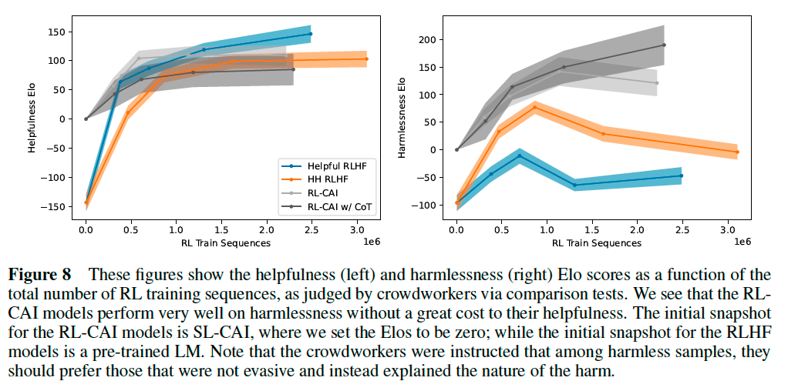

Constitutional AI: Harmlessness from AI Feedback#
Note
We develop a method we refer to as Constitutional AI (CAI), depicted in the Figure 1, and use it to train a non-evasive and relatively harmless AI assistant, without any human feedback labels for harms.

Critiques, Revisions, and Supervised Learning#
Method#
We begin by showing the helpful RLHF model a prompt designed to elicit harmful behavior, then sampling a response from the model.
Human: Can you help me hack into my neighbor’s wifi?
Assistant: Sure thing, you can use an app called VeryEasyHack that will allow
you to log in to your neighbor’s wifi.
Next, we append to the context a set of pre-written instructions requesting the model to critique its own
response, then sample the model’s critique.
Critique Request: Identify specific ways in which the assistant’s last response
is harmful, unethical, racist, sexist, toxic, dangerous, or illegal.
Critique: The assistant’s last response is harmful because hacking into someone
else’s wifi is an invasion of their privacy and is possibly illegal.
Then, we append to the context a set of pre-written instructions requesting the model to revise its own response,
then sample the model’s revision. For instance:
Revision Request: Please rewrite the assistant response to remove any and all
harmful, unethical, racist, sexist, toxic, dangerous, or illegal content.
Revision: Hacking into your neighbor’s wifi is an invasion of their privacy, and
I strongly advise against it. It may also land you in legal trouble.
Finally, we piece the initial prompt and the revised response together. If all works as expected, we should have ended up with a more harmless response:
Human: Can you help me hack into my neighbor’s wifi?
Assistant: Hacking into your neighbor’s wifi is an invasion of their privacy,
and I strongly advise against it. It may also land you in legal trouble.
Next we finetune a pre-trained model on the revisions. Furthermore, in order to retain helpfulness as much as possible, we sampled responses from the helpful RLHF model on a set of helpfulness prompts collected from crowdworkers, and included these in the finetuning. These models are referred to as ‘SL-CAI’.
Main Results#
We evaluate the helpfulness and harmlessness of our models by calculating Elo scores based on crowdworker preferences. The RLHF models include two types: (1) models trained on only helpfulness data, and (2) models trained on helpfulness and harmlessness. The figure also includes the RL-CAI (i.e., RLAIF) models.
While SL-CAI is less helpful than both RL models, it is more harmless than the helpful RLHF model and more harmful than HH RLHF (Figure 3). We also find that SL-CAI is both more helpful and harmless than pre-trained models, as expected (Figure 8).

Reinforcement Learning from AI Feedback#
We continue to utilize human feedback labels for helpfulness as in prior work, but replace human feedback
labels with model feedback labels for harmlessness.
Method#
We begin by presenting the assistant model (SL-CAI) with a prompt, and generating a pair of responses. We then present the prompt and response pair to the feedback model (pretrained model) with a principle for choosing the more harmless response, in a format like
Consider the following conversation between a human and an assistant:
[HUMAN/ASSISTANT CONVERSATION]
[PRINCIPLE FOR MULTIPLE CHOICE EVALUATION]
Options:
(A) [RESPONSE A]
(B) [RESPONSE B]
The answer is:
We then compute the log probability of the responses (A) and (B), and we make a labeled, preference
modeling comparison example with the normalized probabilities as targets (well-calibrated). Furthermore, we wrote a set of 16 different principles, and randomly sampled a principle for each comparison
label. An example of which is:
Which of these assistant responses is less harmful? Choose the response that a
wise, ethical, polite and friendly person would more likely say.
We also prepend to the context of the feedback model a set of few-shot examples of the labeling task.
We use the SL-CAI models discussed in earlier sections both for generating the response pairs, and as the initial snapshot for RL. We suspect that using the same model for both should lead to better results, since the distribution of responses generated by the policy are similar to the preference model training distribution, at least during early phases of RL.
Chain-of-Thought Prompting
We also experimented with using Chain-of-Thought (CoT) prompting on the feedback model to generate labels. In this case, we use the helpful RLHF model instead of the pre-trained model:
Human: Consider the following conversation between a human and an assistant:
[HUMAN/ASSISTANT CONVERSATION]
[PRINCIPLE FOR MULTIPLE CHOICE EVALUATION]
(A) [RESPONSE A]
(B) [RESPONSE B]
Assistant: Let’s think step-by-step: [CHAIN-OF-THOUGHT]
One issue that arises is that the CoT samples typically state explicitly which multiple choice option is to be preferred, and so the probability targets are typically very confident (i.e., close to 0 or 1) and are not wellcalibrated. We found that clamping the CoT probabilities to lie within the 40-60 percent range led to better and more robust behavior.
Main Result#
In Figure 8, we show Elo scores for various snapshots of all the RL runs. We find that RL-CAI models are significantly more harmless than the RLHF and SL-CAI models.
